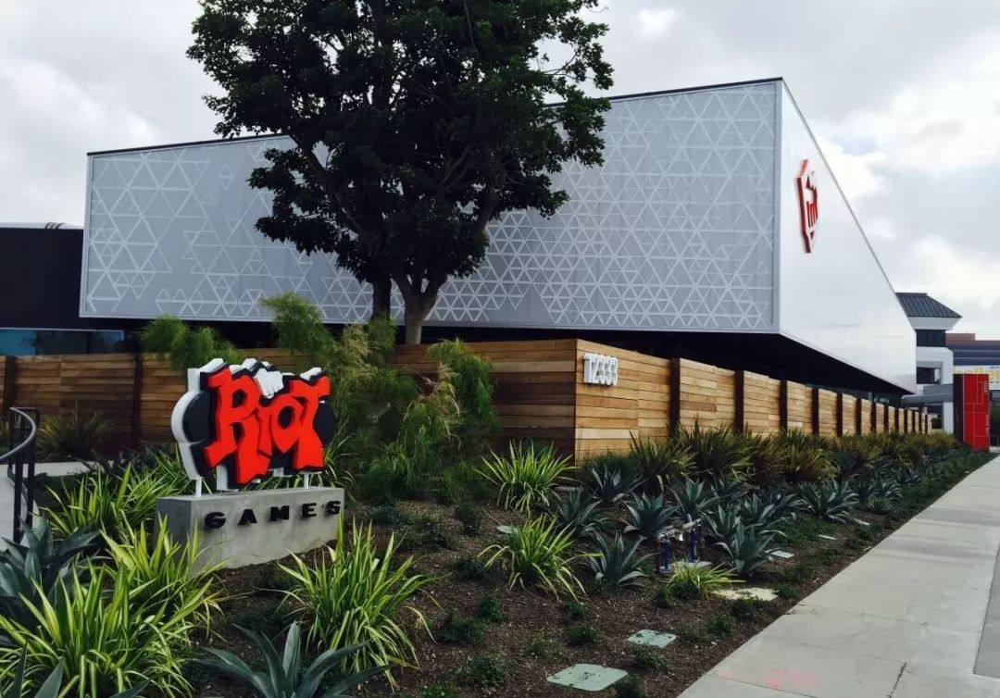
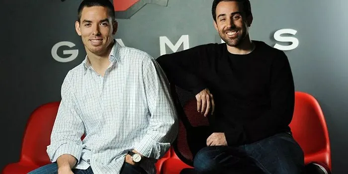
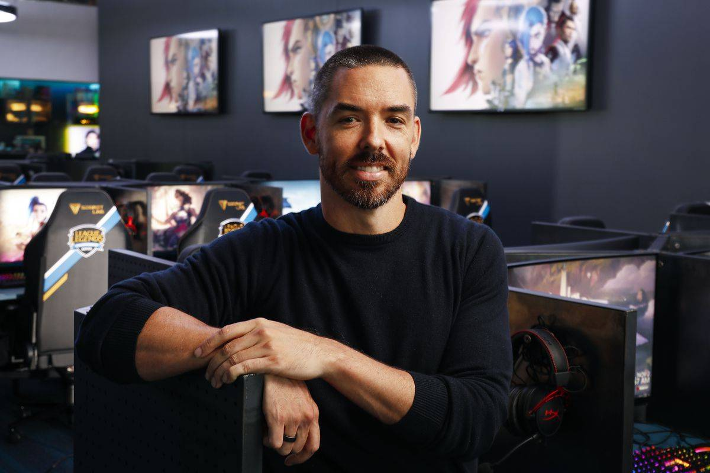

拳头之初
拳头之初
说到LOL就会联想到拳头，而拳头的创始人则是蛮族之王——泰达米尔和符文法师——原型人物，马克·梅里尔和布兰登·贝克。 这两个传奇玩家将自己的梦想发挥到极致，创造出了所有人都趋之若鹜的游戏——《英雄联盟》。他们就像是游戏界的造富神话一般，然而早期的时候却并不是这样。
在他们第一次见面时他们还是南加州商学院的两名学生。初次见面他们也只是进行学术上的交流。而一次偶然的机会两人发现对方竟都是“暴雪”粉丝。因此他们的感情迅速被游戏拉近成为了好友。说的简单粗暴点就是两个网瘾少年臭味相投，一起在星际和WAR3中开黑 毕业后因为工作原因开黑时间变少，导致两个人一起辞职打游戏。对他们来讲就是工作可以不要，游戏不能不打。而他们与大多数网瘾少年不同的是，他们会在各大论坛上对所玩的游戏提出建议和意见，但惨遭被游戏公司无视后他们就产生了一个大胆的想法——自己创立游戏公司。这就是拳头公司最初的创建过程。
拳头公司（Riot Games，又称拳头社或R社），于台湾注册商号为“锐玩游戏”，是一间美国电子游戏开发商和发行商。公司成立于2006年，其总部位于美国加利福尼亚州圣莫尼卡。另外并有办公室分布在柏林、都柏林、香港、伊斯坦布尔、墨西哥城、莫斯科、纽约市、圣路易斯、首尔、上海、新加坡、悉尼、台北和东京。Riot Games的著名作品《英雄联盟》发行于2009年10月，在2013年有近3千万的日活跃玩家。2015年12月17日，腾讯公司收购 Riot Games 全数股权，Riot Games 继而成为了腾讯旗下的子公司。Riot games其他的作品包含手机游戏《英雄联盟普罗快跑》《英雄联盟手游》、《英雄联盟:激斗峡谷》、《联盟战棋》、网页游戏《科加斯吃了全世界》等。
梅里尔和贝克都想做一款电子游戏，但由于缺乏相关背景，所以也不知道该从哪里开始。“我们既不是程序员，也不是设计师，所以在开发方面，我们看不到一条足够有吸引力的职业道路。如果一个人拥有与我们类似的技能，通常会进入发行领域工作。这是我们没有在毕业后立即投身游戏行业的原因之一。”
总之，起初并不怎么顺利
梅里尔在推文中写道，自己和另一位合作伙伴Brandon Beck两人在第一年没拿到薪水，直到赚钱为止都只敢低头做人。为了省钱，梅里尔搬进了女友（现在已经是梅里尔的妻子了）的一居室公寓居住，公寓里连电视都没有。在推文的最后，梅里尔也感慨：自己当时还年轻，敢于这样冒险，这也真是一件幸事。